Guitar Hero III - Game Only  Guitar Hero III: Legends of Rock boss battles give fans a chance to compete against legendary guitarists such as Slash and Tom Morello. Players are required to deplete the boss` Rock Meter before the boss goes into their Death Drain solo, which always means `lights-out.` After defeating a boss, players unlock that guitarist as a playable character and continue to the encore for the set list, which is a master recording of one of their respective bands` most well-known tracks. for instance, When Morello is defeated, the next performance is "Bulls on Parade," during which Morello performs on stage alongside the player. Guitar Hero 3 Features: Slashs Original Boss Battle Recording Welcome to The Jungle (by Guns N Roses) One (by Metallica) Paint It Black (by The Rolling Stones) Cherub Rock (by Smashing Pumpkins) Sabotage (by Beastie Boys) The Metal (by Tenacious D) My Name is Jonas (by Weezer) Knights of Cydonia (by Muse) Even Flow (by Pearl Jam) Lay Down (by Priestess) Cult of Personality (by Living Colour) Miss Murder (by AFI) Through Fire and Flames (by Dragonforce) Number of the Beast (by Iron Maiden) 3`s and 7`s (by Queens of the Stone Age) Suck My Kiss (by Red Hot Chili Peppers) Raining Blood (by Slayer) Reptillia (by The Strokes) Paranoid (as made famous by Black Sabbath) Cities on Flame (as made famous by Blue Oyster Cult) Mississippi Queen (as made famous by Mountain) La Grange (as made famous by ZZ Top) Rock and Roll All Nite (as made famous by Kiss) Schools Out (as made famous by Alice Cooper) Rock You Like a Hurricane (as made famous by Scorpions) Slow Ride (as made famous by Foghat) Barracuda (as made famous by Heart) Guitar Hero World Tour - Game Only 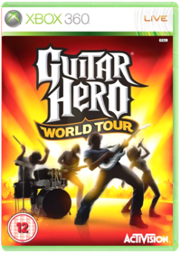 ActivisionGame Only - Controller Required To PlayInnovative Music Studio - Compose, record, edit and release your own music.Battle of the Bands Mode - Rock out in solo career mode or battle against other four person bands online. Create-a-Rocker - Customize your own rocker or choose from several in-game music artists.The Rock and Roll Experience - Biggest Selection of on-disc music with 85 master tracks! Innovative Music Studio. Compose, record, edit and release your own music.Battle of the Bands Mode. Rock out in Solo Career Mode or battle against other four-person bands online.Create-a-Rocker. Customise your own rocker or choose from several in-game music artists.Biggest selection of on-disc music with 86 master tracks, including...Airbourne - Too Much Too YoungBlink-182 - DammitBullet For My Valentine - Scream Aim FireCreedence Clearwater Revival - Up Around The BendFoo Fighters - EverlongJimi Hendrix - Purple Haze (Live)Joe Satriani - Satch BoogieLinkin Park - What I've DoneLynyrd Skynyrd - Sweet Home Alabama (Live)Metallica - Trapped Under IceMuse - AssassinNirvana - About A Girl (Unplugged)No Doubt - SpiderwebsOzzy Osbourne - Crazy TrainSex Pistols - Pretty VacanSurvivor - Eye Of The TigerVan Halen - Hot For TeacherWillie Nelson - On The Road Again Star Wars: The Force Unleashed 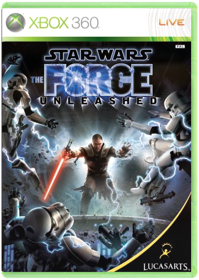 ActivisionStar wars the force unleashed. Cert: 12..Unleash the power of the force like never before in a new chapter of the stare wars saga.The Elder Scrolls V: Skyrim 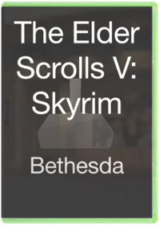 BethesdaDead Rising 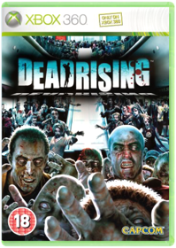 CapcomDead Rising follows the harrowing tale of Frank West, an overly zealous freelance photojournalist on the hunt for the scoop of a lifetime. In pursuit of a juicy lead, he makes his way to a small suburban town only to find that it has become overrun by zombies. He escapes to the local shopping mall, thinking it will be a bastion of safety yet it turns out to be anything but. It will be a true struggle to survive the endless stream of enemies, but players will have full reign of a realistic shopping center, utilizing anything they find to fight off the flesh-hungry mob and search for the truth behind the horrendous epidemic. Dead Rising features an open level of freedom and offers a vast array of game play possibilities. As part of a real time system, time is dynamic in Dead Rising, marching on whether Frank is actively engaged or if simply stationary. Time also plays a role as zombies become more powerful when the sun goes down. Though they move slowly during the day, the zombies become stronger and faster at night, making it even more dangerous for players to survive. The unprecedented numbers of enemies come in never-ending waves and consist of a diverse population of former humans that have retained some memory of their previous lives, which is reflected in their behavior and appearance. The variety of different stores in the mall offers players an endless supply of resources including vehicles, makeshift weapons and more. Players will also encounter other survivors along the way and by helping them can acquire valuable clues as to what has happened.Lost Planet: Extreme Condition 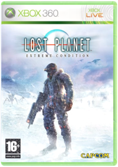 CapcomGreat Games and Accessories for the Xbox 360 from Gamesbuyer.The Beatles Rock Band 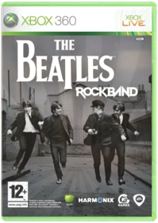 Electronic ArtsBeatles - Rock BandCommand & Conquer 3: Tiberium Wars 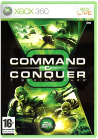 Electronic Artsgodd condition.Mass Effect 2 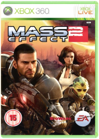 Electronic ArtsThe sci-fi role-playing epic continues, as the Mass Effect story delves into darker territory and the fate of Commander Shepard, his crew and the entire galaxy.Portal 2 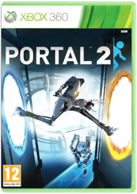 Electronic ArtsBlue Dragon 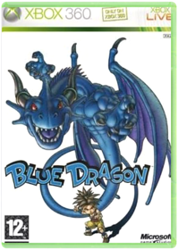 Microsoftgame producer Hironobu Sakaguchi of Mistwalker game studio and developer Artoon present the highly anticipated Xbox 360-exclusive Blue Dragon. Featuring the character design of Akira Toriyama, who designed Dragon Ball Z, and music by Nobuo Uematsu, the composer for Final Fantasy, Blue Dragon is an epic role-playing game (RPG) centered on a young boy named Shu and several of his friends. These unlikely heroes possess miraculous strength and magical power to control phantom shadows that mirror the actions of their masters.Shu and company must use their shadows as weapons as they battle the evil Nene and an antiquated human race of people who command a magical power thought to have perished long ago. Shu and friends must wield their skills to save their world from impending doom.Encountering various people on a planet with numerous ancient ruins, the characters and shadows travel through a world full of mysteries and illusions, where the slightest touch can cause reactions of unparalleled magnitude.Fable 2 : Classics 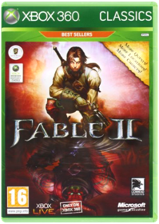 MicrosoftGears of War 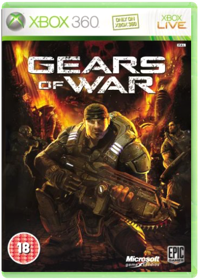 MicrosoftIn a nutshell:One of the most highly rated games of E3, Gears of War is looking likely to be the Xbox 360’s Christmas blockbuster with the best graphics yet seen on the system and a tactical twist on the usual shoot ‘em-up gameplay. The lowdown: With Halo still at least a year out this is currently the Xbox 360’s premier exclusive shoot ‘em-up. Using a third person, over the shoulder, view rather than the usual first person viewpoint the game emphasis the importance of cover and tactics rather than just running and gunning. The question of cover becomes particularly important given the impressively destructible environments you fight in, which create a constantly shifting battlefield for you to navigate. As you’d expect the game also contains an extensive suite of multiplayer and co-op modes for play over Xbox Live. Most exciting moment: The graphics are stunning, nearly photorealistic, but the greatest guilty pleasure in the game so far is the "chainsaw bayonet" and the OTT spurt of gore it extracts from bad guys. Since you ask: Gears of War developers Epic Games are also responsible for the Unreal Engine 3 graphics engine which is used in many other games from Assassin’s Creed to Lost Odyssey. The bottom line: Who needs Halo when the Gears of War are turning as smartly as this? Harrison Dent Halo 3 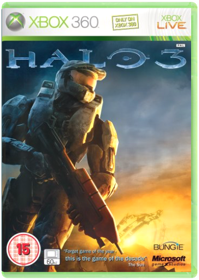 MicrosoftThe epic saga continues with Halo 3, the hugely anticipated sequel to the highly successful and critically acclaimed Halo franchise. In this third chapter of the Halo trilogy, Master Chief returns to finish the fight, bringing the epic conflict between the Covenant, the Flood, and the entire human race to a dramatic, pulse-pounding climax. Halo 3 represents the third chapter in the Halo trilogy-an international award-winning action series that grew into a global entertainment phenomenon, selling more than 14.5 million units worldwide, logging more than 650 million hours of multiplayer action on Xbox Live, and spawning action figures, books, a graphic novel, apparel, an upcoming film adaptation, and moreToo Human 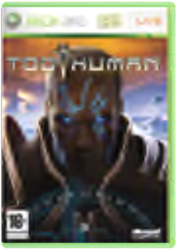 MicrosoftStep into the world of Too Human, the next-generation third-person epic action-game from famed developer Silicon Knights. As the Cybernetic God Baldur, players are thrust into the midst of an ongoing battle that threatens the existence of mankind. An ancient machine presence has forced the Gods hand. In the first of a three part trilogy, Baldur is charged with defending mankind from an onslaught of monstrous war machines bent on eradication of human life.In Too Human, players are treated to a non-stop barrage of action powered by the seamless integration of melee and ranged firearms combat and fuelled by breathtaking visuals now possible thanks to a powerful combination of the Xbox 360 and the Unreal Engine 3. Battles unfold in awesome scale as players engage with vast numbers of enemies. Take it to the next level by playing the entire single player campaign in multiplayer co-op mode via Xbox Live or system link. Too Human is produced by renowned Canadian developer Silicon Knights. The masterminds behind critically-acclaimed hits such as Metal Gear Solid: The Twin Snakes and Eternal Darkness, Silicon Knights brings a wealth of knowledge, story-based design and gameplay expertise to usher in the next-generation of video gaming. The Birth of an Icon: Fight as the powerful cybernetic god, Baldur, as he battles his way through enemy armies to become one of gamings renowned iconic heroes. From weaponry and armor, to combat techniques and combos, fully customize Baldur to become the best possible hero.Epic Beginning to a Captivating Trilogy: Begin the saga of Baldur in the first chapter of an exciting three-part narrative in the tradition of classic trilogies such as Star Wars and Lord of the Rings.Explosive Melee and Firearms Combat: Itll take more than brawn and raw strength to supplant the machine hordes. Utilize a sophisticated blend of seamless me Viva Pinata: Limited Edition MicrosoftAmerican English version, Region Free, will work on any 360 console systemIncludes Viva Pinata Animated Series Preview Lego Star Wars II Demo Frogger Demo And More! Viva Piata, the latest innovative gaming experience from leading U.K.-based developer Rare Ltd., invites gamers to create an immersive world where living piatas inhabit an ever-changing environment. Beginning with a few basic tools, players build and take control of this environment, using their creativity and imagination to attract, protect and manage over 60 different piata species that can visit their world and make it their home. Utilizing hundreds of customizable elements, players can create a unique piata paradise. Pushing the capabilities of the hardware, Viva Piata brings a vibrant and engaging gaming experience to the Xbox 360 platform. Appealing to kids, adults, casual gamers and enthusiasts alike, this uniquely customizable and social game rewards and challenges all players regardless of their skill level. The Viva Piata gameplay experience presents a customizable, social and spontaneous world in which gamers play an absolutely crucial role. The Viva Piata world is an evolving paradise teeming with fantastic living piata creatures and vibrant plant life, all determined by the players choices and actions. Viva Piata allows players imaginations to run wild by providing them with expansive freedom and choice. Your choice of contents will determine which of the piata species are attracted to your world, since they all have individual requirements. Sowing grass, digging ponds, planting flowers and growing trees all affect which of the unique piatas you will see. Its not just about plants, either; there is a whole range of ornaments and structures that could be decisive. Your reward for creating an appealing paradise is to watch the piatas visit and eventually reside there, which is where the fu Test Drive Unlimited 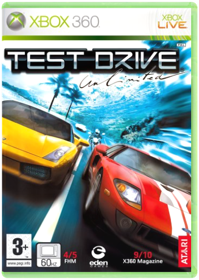 Namco BandaiGrand Theft Auto IV 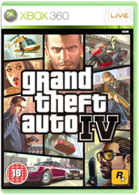 RockstarWhat does the American Dream mean today?For Niko Bellic, fresh off the boat from Europe, it is the hope he can escape his past. For his cousin, Roman, it is the vision that together they can find fortune in Liberty City, gateway to the land of opportunity. As they slip into debt and are dragged into a criminal underworld by a series of shysters, thieves and sociopaths, they discover that the reality is very different from the dream in a city that worships money and status, and is heaven for those who have them and a living nightmare for those who don’t. Beginning with the 1997 release of the original Grand Theft Auto, the GTA series has been one of the most prolific, controversial and down right entertaining franchises in video games history. This pedigree of success guarantees that the highly anticipated eleventh game in the series, Grand Theft Auto IV, will garner at least as much attention if not more. Return to Liberty City. The dream as Niko expected it. View larger. There's always a catch. View larger. But some skills are international. View larger. The Plot Grand Theft Auto IV is a brand new adventure in the GTA universe following the experiences of Nikolai "Niko" Bellic, a new immigrant from an undisclosed eastern European country whose troubled pa st and the persuasion of his cousin Roman have brought him to the fictional Liberty City. Unfortunately, Niko’s search for the American Dream and a much needed fresh start, hits an immediate snag when the rags to riches story Roman spun to pique Niko's interest is exposed as not only a complete fabrication, but a ploy to enlist Niko’s well-known skills as a tough guy against the ample list of enemies clamouring for Roman’s debt-ridden blood. Because Roman is the only person Niko knows in Liberty City he begrudgingly accepts his role as Roman’s protector despite the deception. But as time goes on Niko comes into his own, and his experience on the wrong side of the tracks proves more valuable than he could have ever imagined as he fights for survival and later supremacy on the crime ridden streets of Liberty City. Game Environments Based on several of the boroughs of New York City and parts of New Jersey, Liberty City, familiar to players of previous games in the series, has been entirely redesigned for GTA IV. Players can expect visible detail down to the weeds growing in the cracks in the sidewalk, cars and buildings of visibly different ages and a much greater level if verticality in the buildings and bridges that they are able to explore as Niko moves through the city streets. In addition, pedestrians in GTA IV are much more realistic. No longer simply moving cardboard cut-outs, these NPCs are intelligent, modern, human representations that laugh, cry, eat, drink, use cell phones and ATMs, and talking amongst themselves regardless of Niko’s interaction with them. Gameplay Historically GTA games have focused heavily on mission-based play, requiring successful completion of fixed tasks in order for players to progress through the game, but this has changed to a great extent in GTA IV. Players will experience an entirely new and exciting emphasis centred on the blending of on-mission and off-mission play, resulting not only in an increased sense of realism, but more interesting and unrestricted gameplay. Features Aside from the car jacking and a detailed city environment here are the new features for GTA IV: Improved combat system - Now you can use cover and also a target lock system, which allows you to take out targets with greater ease and accuracy. Plus, you can engage in some hand-to-hand combat if you can't get your hands on a piece quick enough.Cell phone - Not just for basic phone calls anymore. Use your in-game cell phone to receive missions via SMS, snap photos, and ZiT (tag) songs that can be downloaded exclusively on Amazon.com/mp3.Free time - In between missions you can take advantage of "me" time. There are gentleman's clubs, comedy clubs, bowling alleys, and bars, which all house unique activities.Take a break from the storyline - A variety of side missions allow you to help run a car service, "borrow" cop cars, assassinate targets, help solve problems for those on the street, or take to the air with stunt jumps that are scattered all over the city.Control your own fate - Throughout the game choice moments will arrive causing you to make a decision that will affect relationships and money. Multiplayer Give Niko a rest and create your own multiplayer "hero." GTA has added multiplayer modes allowing you to take your creation out to play online in competitive, co-op, and free form modes. Competitive mode has you fighting against the cops, jacking cars, or racing to finish odd jobs. Co-op challenges you and your friends with various tasks including Hangman's NOOSE where you are responsible for escorting a wanted kingpin to a safe extraction point. Freeform lets you and 15 others lose on Liberty City. Use this mode to hit up the bar and play virtual darts versus each other or head out to the streets and set up your own drag races. If you can dream it, you can do it in Freeform mode. First Episode of Downloadable Content for Grand Theft Auto IV: The Lost and Damned. (Downloadable content that is not included with the actual shipped game) Available exclusively on Xbox LIVE from February 17th 2009. The Lost and Damned will feature all new content and is the first of two episodes announced for Grand Theft Auto IV on Xbox 360. Developed by series creator Rockstar North and set in Liberty City, The Lost and Damned features a new main character and plot that intersects with the storyline of Grand Theft Auto IV; new missions that offer an entirely fresh way to explore Liberty City with new multiplayer modes, weapons and vehicles; and a diverse soundtrack with additional music – all with the incredible production values that are the trademarks of Grand Theft Auto. Grand Theft Auto IV: The Lost and Damned requires players to have the full version of Grand Theft Auto IV for Xbox 360 and Xbox LIVE membership to download. Bioshock 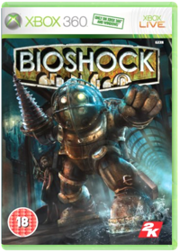 Take 2 InteractiveGame is Region Free version, English Language, Will Play on PAL consolesBioShock lets you do the impossible as you explore a mysterious underwater city. When your plane crashes, you discover Rapture - an underwater Utopia torn apart by civil war. Caught between powerful forces and hunted down by genetically modified "splicers" and deadly security systems, you have to come to grips with a deadly, mysterious world filled with powerful technology and fascinating characters. As little girls loot the dead, and biologically mutated citizens ambush you at every turn. Now you`re trapped, caught in the middle of a genetic war that will challenge both your capacity to survive and your moral allegiance to your own humanity. Make meaningful and mature decisions that culminate in the grand question - do you exploit the innocent survivors of Rapture to save yourself - or risk all to become their savior? Biologically mod your body with plasmids - genetic augmentations that empower you with dozens of fantastic abilitiesTake control of your world by hacking devices and systemsUpgrade your weapons at Fire-For-Effect stations located through RapturePick up materials in the city to modify them at U-Invent kiosksExplore an incredible and unique art deco world hidden deep under the ocean, vividly illustrated with realistic water effects * Release date, product content and box design all subject to change by the publisher without prior notice BioShock 2 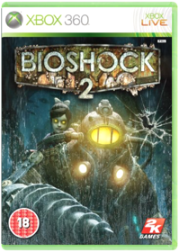 Take 2 InteractiveFollow-up to BioShock, 2K Games' critically acclaimed and commercially successful 2007 release, BioShock 2 is a first-person shooter set in the fictional underwater city of Rapture. As in the original game, BioShock 2 features a blend of fast-paced action, exploration and puzzle-solving as players follow varying paths through the overarching storyline based on the decisions that they are forced to make at various points in the game. In addition to a further fleshing out of the franchise's popular storyline, players can look forward to new characters, game mechanics, weapons, locations and a series first, multiplayer game options.Set approximately 10 years after the events of the original BioShock, the halls of Rapture once again echo with sins of the past. Along the Atlantic coastline, a monster — somehow familiar, yet still quite different from anything ever seen — has been snatching little girls and bringing them back to the undersea city. It is a Big Sister, new denizens of Rapture who were once one of the forgotten little girls known as Little Sisters, known to inhabit the city's dank halls. No longer a pawn used to harvest ADAM, the dangerously powerful gene-altering lifeblood of Rapture, from the bodies of others and in turn run the risk of being harvested herself, the Big Sister is now the fastest and most powerful thing in Rapture. You, on the other hand are the very first Big Daddy, in fact the prototype, that for some reason has reactivated. You are similar to the Big Daddies familiar from the original BioShock, but also very different in that you possess free will and no memory of the events of the past ten years. The question is, as you travel through the decrepit and beautiful fallen city beneath the waves, hunting for answers and the solution to your own survival, are you really the hunter, or the hunted? Evolution of the Genetically Enhanced BioShock Infinite 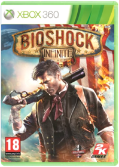 Take 2 InteractiveThe Elder Scrolls IV: Oblivion 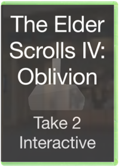 Take 2 InteractiveIn a nutshell:One of the most respected Western role-playing games of all time is back with huge improvements in graphics and accessibility, including a completely real-time combat system and the largest, most detailed game world ever seen. Phew. The lowdown: Although previous Elder Scrolls games have enjoyed something of a like it or loathe it reputation, this latest sequel has the means to appeal to everyone thanks to one simple improvement: its incredible new graphics. Unlike many role-playing games it is viewed from a first person perspective, with a game world portrayed in a staggering amount of detail, and realistic psychics and characters that genuinely seem to be going on about their own separate lives. The game’s real appeal though lies in the huge freedom: play it exactly how you want. Most exciting moment: Using the new combat engine to fight off dozens of enemies, then stealing one of their mounts and riding off into the sunset. Since you ask: Emperor Uriel Septim VII is voiced by Star Trek and X-Men luminary Patrick Stewart, but all the characters in the game have full spoken voiceovers instead of just onscreen text. This is the next generation, you know. The bottom line: One of the most realistic and accessible role-playing games ever made. Harrison Dent Half-Life 2: The Orange Box 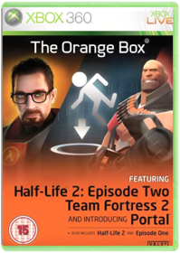 Valve5 Games, One Box: The Orange Box is the ultimate collection of innovative action games for the PC or console, and an amazing introduction to the Half Life series for console gamers.LEGO Rock Band - Game Only 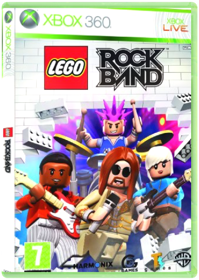 Warner Bros. InteractiveLEGO Rock Band merges two of the most popular videogame franchises to deliver a unique family-friendly music experience that will take tweens, teens, families and gamers of all ages on a wild journey to rock stardom in order to "Build a Band and Rock the Universe".Combining the authentic multiplayer music experience of Rock Band with the accessibility, customisation and humour of LEGO games, LEGO Rock Band allows players to create their own unique rock star style and customise their own avatars, band members, roadies, and managers. As players successfully complete songs and rock challenges, they can collect LEGO studs, unlock additional content and collect amazing vehicles, which can take their band from local gigs at rock clubs to epic stadium shows and even fantasy settings on Earth and beyond. Rock along to current hits and classic favourites that the whole family will enjoy including Foo Fighters' 'Breakout', Jackson 5's 'I Want You Back', Vampire Weekend's 'A-Punk', Blur's 'Song 2', Carl Douglas' 'Kung Fu Fighting', Europe's 'The Final Countdown', Good Charlotte's 'Boys And Girls', Pink's 'So What', Bon Jovi's 'You Give Love A Bad Name', Counting Crows' 'Accidentally In Love', Sum 41's 'In Too Deep', Blink 182's 'Aliens Exist' and The Hives' 'Tick Tick Boom!' just to name a few!Use the LEGO character customiser to create and personalise your band, instrument controllers and entourage.Pull off killer riffs in LEGO themed Rock Power Challenges to perform amazing feats such as defeating a giant octopus, summoning a storm or demolishing a skyscraper.Build fame LEGO style by completing songs to collect LEGO studs - unlock cool vehicles, progress to new venues and unlock new characters and instru |


Xbox Games
Collection Total:
24 Items
24 Items
Last Updated:
Jan 17, 2015
Jan 17, 2015
 Made with Delicious Library
Made with Delicious Library
Musselburgh, East Lothian zipflap congrotus delicious library Mathieson, Graeme